Every screen of the software, explained the way the shop works: what it is for, what to press, and what happens to your stock, your cash and your khata when you press it.
Keep this near the billing computer. Chapters are short on purpose — read the one you need, when you need it.
Half an hour, done once. After this the software runs the shop.
What to do, in order
Sign in with admin / admin. Go to Settings → Users and change the password straight away. Give every person at the counter their own login.
Settings → Company: shop name, address, phone, GSTIN, state, bank details. These print on every bill exactly as typed.
Settings → Accounts: open Cash Account and Bank Account and type the opening balance — the cash in the drawer and the money in the bank on day one. This is the figure most people forget.
Customers and Suppliers: add the people you already deal with, with what they owe you (Dr) or you owe them (Cr).
Put the gold in. See the table below — money is only half of what you hold.
Run Changeover Check after one month of double entry (chapter 24) before you stop the old book.
Putting the gold in
What you hold
Where it goes
Tagged pieces on the shelf
Tag & Barcode → New stock. Weight, purity, and what it cost you per gram (Cost/gm).
Loose bullion and scrap in the safe
Tag & Barcode → From loose metal → Opening metal. Not a purchase — you owe nobody for it.
Gold a karagir is holding
On his record under Suppliers, as an opening metal balance in grams, Dr.
Metal a trade customer owes you
On their record, as an opening metal balance in grams.
Fill in Cost/gm on every piece
A piece with no cost still shows its weight, but counts as nothing towards your stock value — your books will say you are poorer than you are. The Stock Report tells you how many pieces are missing a cost.
2The Dashboard and getting around
Open the shop, glance once, and you know where you stand.
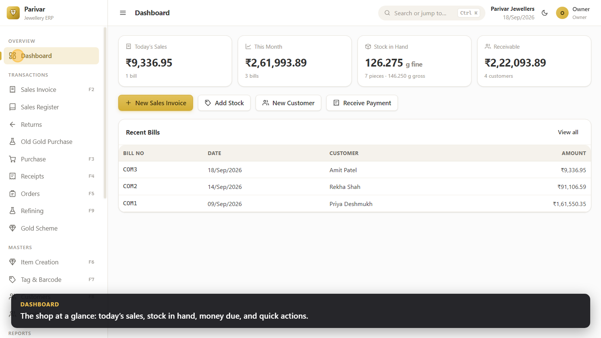
The Dashboard: today's sales, stock in hand, money due, and quick actions.
Left menu: Transactions (billing, purchase, receipts, orders, refining, old gold, scheme), Masters (items, tags, customers, suppliers), Reports.
Quick actions at the top of the Dashboard go straight to a new bill, new stock, a new customer, or a receipt.
Ctrl+K opens the search box: type any page name or a customer's name and press Enter.
The moon / sun button at the top switches dark mode.
Nothing here is typed twice
Every figure on the Dashboard and in every report is worked out fresh from the bills, receipts and purchases you saved. There is no running total that can quietly go wrong; fix a bill and everything that depends on it corrects itself.
3Item Creation — what you sell
Masters → Item Creation (F6). Make each kind of piece once.
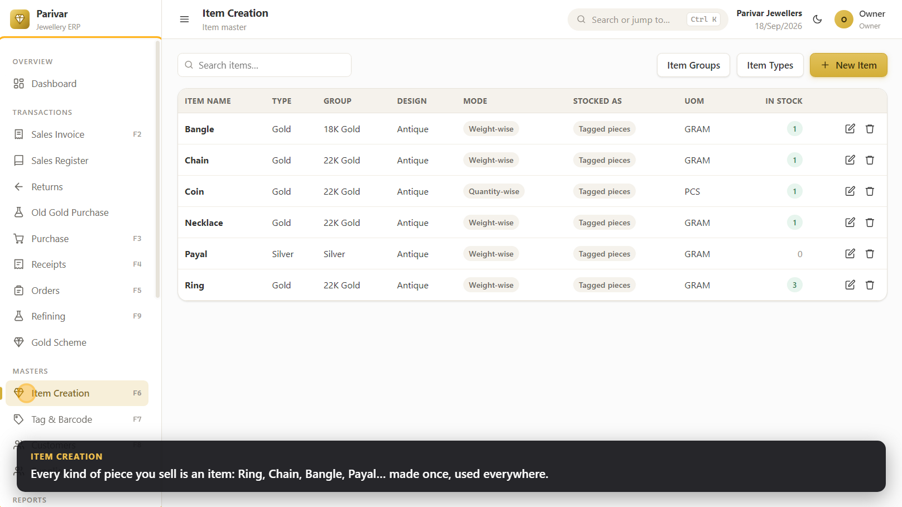
The item master: type, purity group, how it is stocked, and how many are in stock.
Press New Item. Type the name — Ring, Chain, Bangle, Payal, Pendant.
Choose the Item Type (Gold, Silver, Platinum, Stone) and the Item Group (22K Gold, 18K Gold, Silver…). The group carries the default purity.
Stocked As: Tagged pieces for anything that gets a barcode. Loose by weight for mani, fuli, dori — bought as 100 g and sold as 10 g, no tag.
HSN code (7113 for jewellery) and a reorder level if you want a warning when stock runs low. Save.
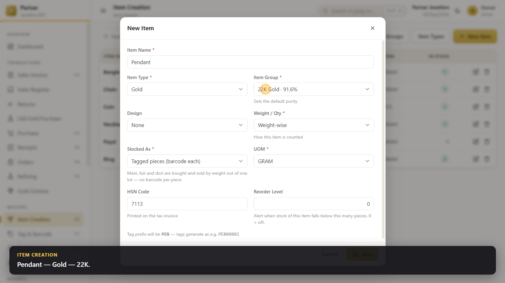
New Item: name, type, group, stocked-as.
The tag prefix is made from the first three letters — every Pendant barcode will read PEN00001, PEN00002… You never have to think of a number.
Item Groups and Item Types buttons on the same screen let you add a group (say 20K Gold at 83.3%) or a design (Antique, Filigree) once.
4Tag & Barcode — stock, one piece at a time
Masters → Tag & Barcode (F7). This screen is your stock register.
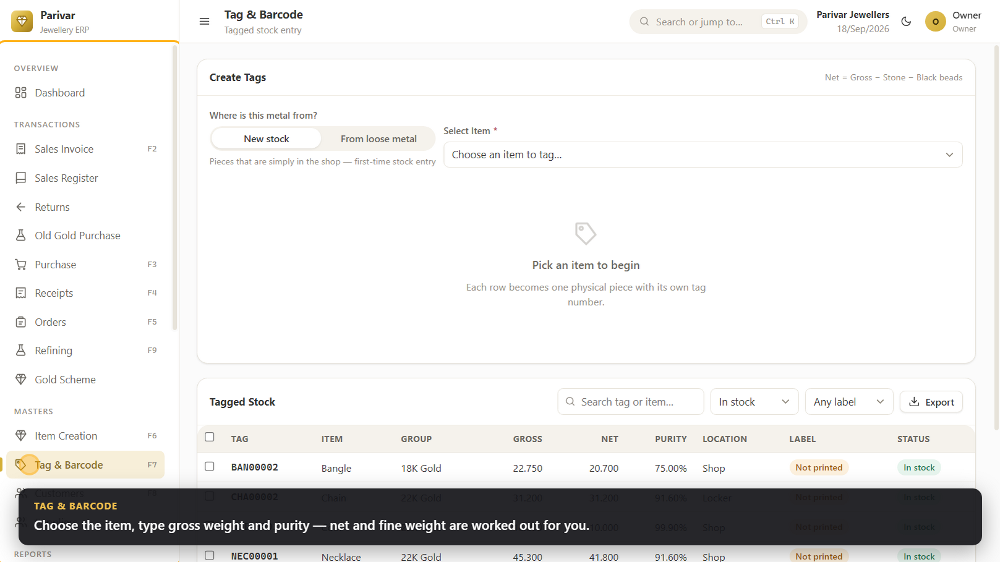
Create Tags at the top; every tagged piece in the shop listed below.
New stock
Choose the item. The purity fills in from its group; the making charge from the Making Master, if you have set one.
In Same for every piece, set what applies to the whole batch: purity, making per gram, hallmark, Cost/gm, location, tray.
One row per piece: gross weight, stones or beads if any. Net and fine weight are worked out as you type. Paste a block from Excel if you have one.
Save N tags. Each piece gets its number and appears in the list below.
Tick the pieces and press Print labels (chapter 27).
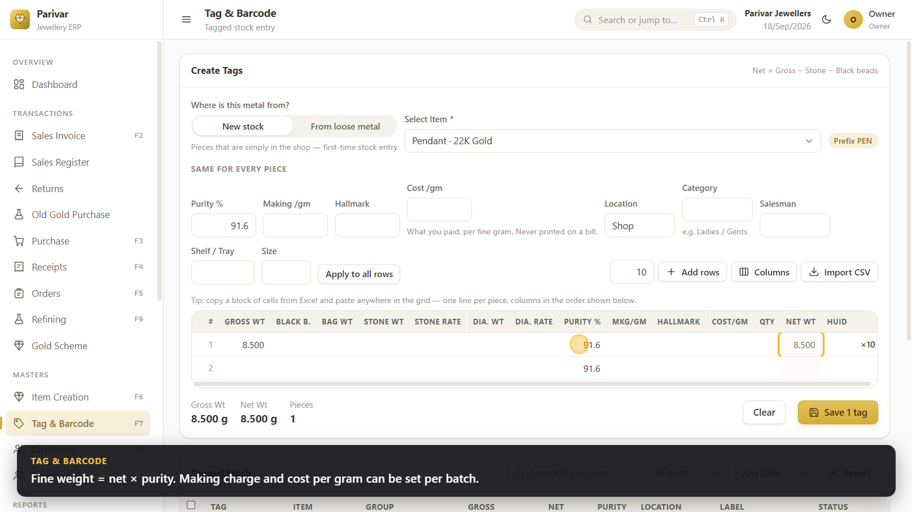
Gross 8.500 g at 91.6% gives a fine weight of 7.786 g — no calculator.
From loose metal
When you make pieces out of bullion or old gold already in the safe, choose From loose metal. The fine weight of the new tags comes out of the loose pool, so metal is never created from nothing. If there is not enough loose metal, the screen says so before you save.
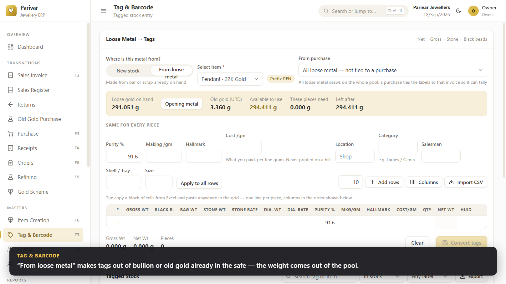
From loose metal: what is in the pool, what these pieces need, what is left.
From purchase: pick the invoice the pieces were made from and the purchase can tally its bought weight against the labels. Choose All purchases to label against every open invoice of that metal at once — each piece is booked to the oldest invoice that still has room for it, so the invoices tally in the order they came. Choose All loose metal to draw on the whole pool without tying the labels to any invoice.
Opening metal: the bullion and scrap in the safe on the day you started. Enter it here, not as a purchase.
Why tags matter
At the counter the tag does the typing. Scan it and the whole piece — weight, purity, making, hallmark — lands on the bill. No retyping, no mistakes, and a piece can never be sold twice.
5Customers
Masters → Customers (F8). The khata, without the diary.
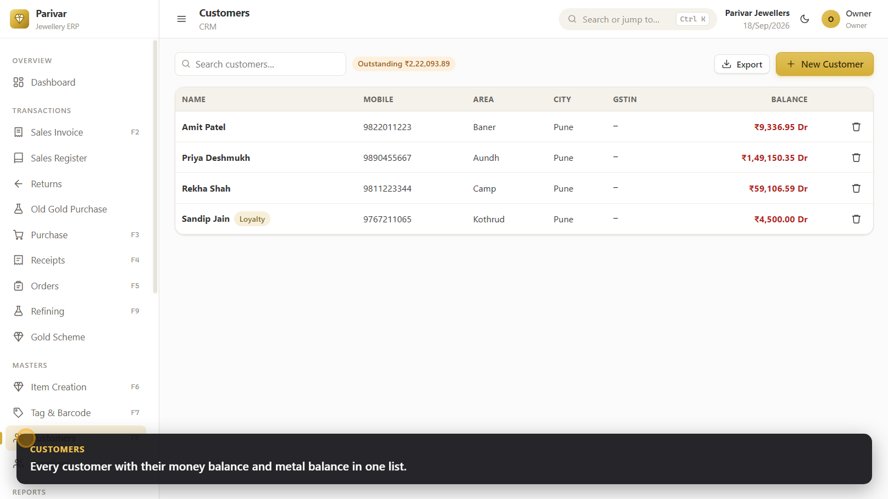
Every customer with their money balance and metal balance.
New Customer. A name and a mobile is enough to start billing; add area, address, GSTIN, PAN as you go.
Opening balance: what they already owe you (Dr) or what you owe them (Cr) on the day you start. Opening metal balance in grams for trade customers.
Birthday and anniversary, so you can greet them. Tick loyalty points if you run a points scheme.
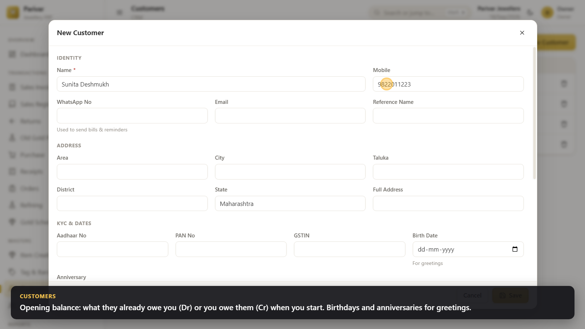
New Customer: contact, address, IDs, opening balance.
Click any customer to open their full Ledger (chapter 20). A customer can also be created from inside a bill with the + button, so billing never stops.
Dr and Cr, once and for all
Dr = they owe you. Cr = you owe them. Money and gold are kept as two separate balances — a customer can owe you rupees and owe you grams at the same time.
6Suppliers, karagirs and refineries
Masters → Suppliers. Everyone you buy from or send gold to.
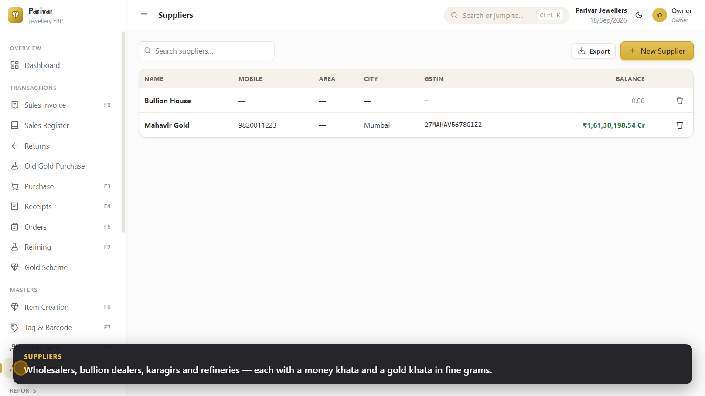
Suppliers, karagirs and refineries, each with a money khata and a gold khata.
Supplier: the wholesaler or bullion dealer you buy from. Purchases on credit go onto this khata.
Karagir: the goldsmith you hand metal to. His gold khata shows what he is holding of yours (chapter 15).
Refinery: where scrap goes to be melted into pure gold (chapter 16).
Each has the same record as a customer, plus an opening metal balance in grams. In our trade gold moves between these people more often than money, so both khatas are always kept.
7Purchase — metal coming in
Transactions → Purchase (F3). One entry; stock and the supplier's khata update by themselves.
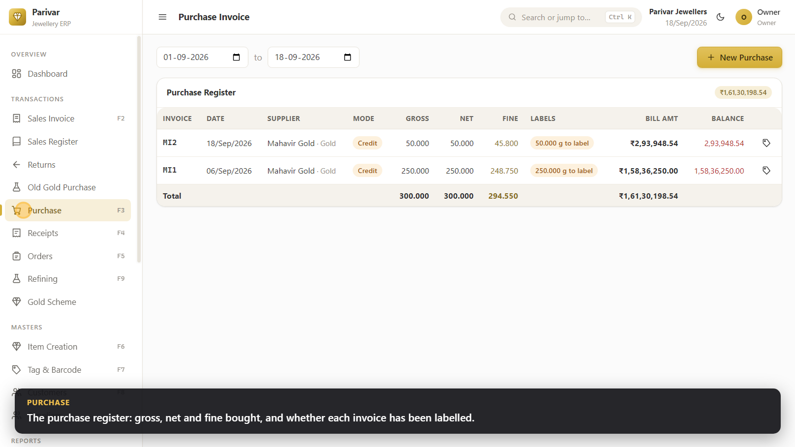
The purchase register: gross, net and fine bought, and the Labels column.
New Purchase. Pick the supplier, the metal, and Cash or Credit.
Material In: one line per item — gross weight, purity, rate per 10 g, and the wastage % the supplier charges. The Fine + Wastage column is what you are really paying for.
Material Out: metal you gave back to the supplier on the same invoice, if any.
Discount, sub-tax, GST, TCS, and Paid Amount. A purchase can also be settled by handing over fine gold (Paid in Fine) at a rate — the rest stays due in rupees.
Save Purchase keeps the invoice open with its Labels Tally; Save & Make Labels jumps straight to Tag & Barcode with this invoice preselected.
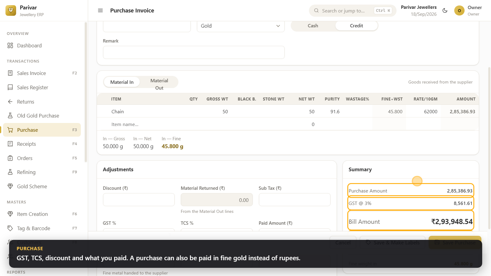
A purchase line: item, gross, purity, wastage, rate — amount and GST follow.
Purchase and labels — the tally
Metal you buy is loose until you tag it. The Labels column on the register says where each invoice stands: Tallied when every gram bought is on a label, … g to label while some is still loose, Over if more was tagged than was bought.
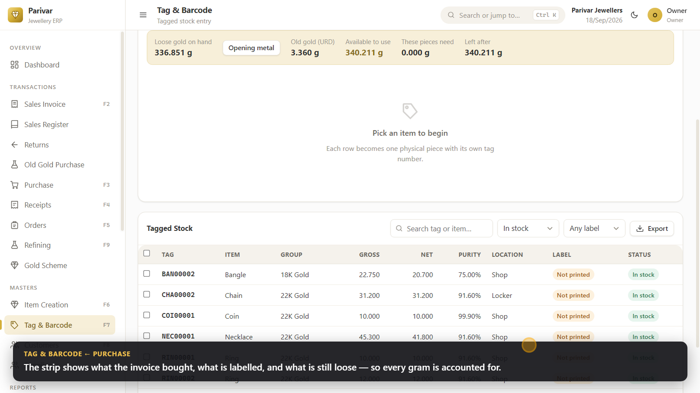
Making labels from a purchase: bought, already labelled, sold untagged, still to label.
What happens when you save
The fine weight joins your loose metal. On credit, the amount goes onto the supplier's khata as money you owe. GST paid is counted as input tax for GSTR-2.
The bill: customer, items grid, old gold, payment, and the live bill summary.
Customer: type a name and pick, or leave blank for a walk-in. Their khata balance appears at once. + creates a new customer without leaving the bill.
Scan the tag in the Tag column, or type the item name and choose the piece from the list. Weight, purity, making and hallmark fill in from the tag.
Type today's Rate/10gm. Making can be a percentage of the metal value or a per-gram figure from the tag.
Bill Summary on the right updates live: goods, making, discount, GST (CGST + SGST or IGST), total.
Payment: mode (Cash, UPI, Card, NEFT, Cheque) and Amount Received. Split this payment when part is cash and part is card.
Save, then Print, PDF or WhatsApp.
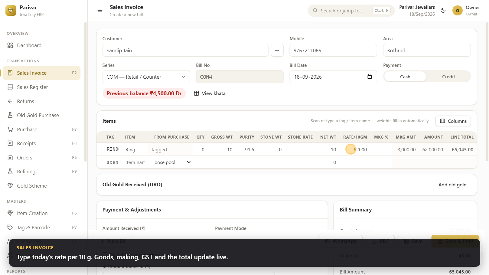
One scanned piece at ₹62,000 per 10 g: goods, GST and total worked out.
Other things the bill can do
Untagged item: type a name with no tag for metal sold before it was labelled. Its weight comes off the loose pool. The From Purchase column lets you say which invoice it came from, so that invoice's tally comes down.
Loose items (mani, fuli): pick the lot and type the grams taken.
Card fee: if the bank's swipe charge is set on your bank account, the customer's share is added and your share is booked as an expense.
Loyalty points and Gold Saving Scheme balances settle the bill once the customer is picked.
Weight-wise bill for trade customers: the metal is owed in fine grams, not rupees; enter what they settle now and the rest stays on their gold khata.
Reverse calculation: type the amount the customer wants to pay and the bill fits the rate or making to it.
What happens when you save
The piece is marked sold and leaves stock. The customer is charged the total less old gold; what they paid goes to cash or bank; the rest stays on their khata. GST is recorded for GSTR-1.
9Old gold on a bill, estimates and credit bills
The three variations you use every week.
Old gold in exchange
Make the bill for the new piece as usual.
Press Add old gold. Enter the old piece's gross weight, its tunch (purity %) and the rate you allow per fine gram.
Its value comes off the bill. The customer pays only the difference.
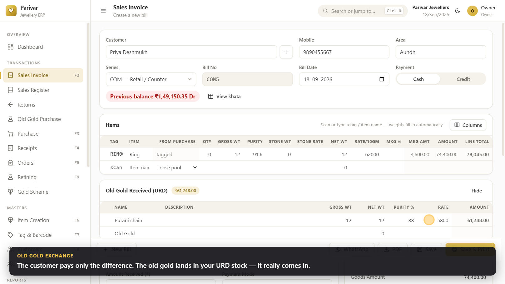
Old Gold Received: 12 g at 88% — the value is deducted from the total.
The old gold really comes in
It is not only knocked off the total. The metal lands in your URD stock (old gold pool) and shows in the Day Book and Stock. You gave value for it, and now you hold it.
Estimate (quotation)
Change Series to ESM — Estimate. GST not required ticks itself, because an estimate is not a tax invoice. Everything else works the same; the number comes from the estimate series.
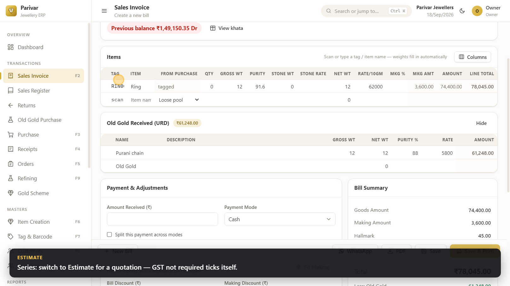
Estimate series: GST not required is on by default.
Credit bill
Tick Credit, choose the customer (a credit bill needs one), and put only what they handed over in Amount Received. The balance goes onto their khata and shows under Outstanding until it is cleared with a Receipt.
10Sales Register and Returns
Every bill, and what came back.
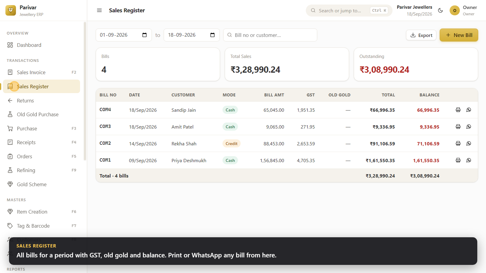
Sales Register: bill amount, GST, old gold, total and balance for the period.
Click a bill to open it; print or WhatsApp it from the row. Export the list with the Export button.
Returns
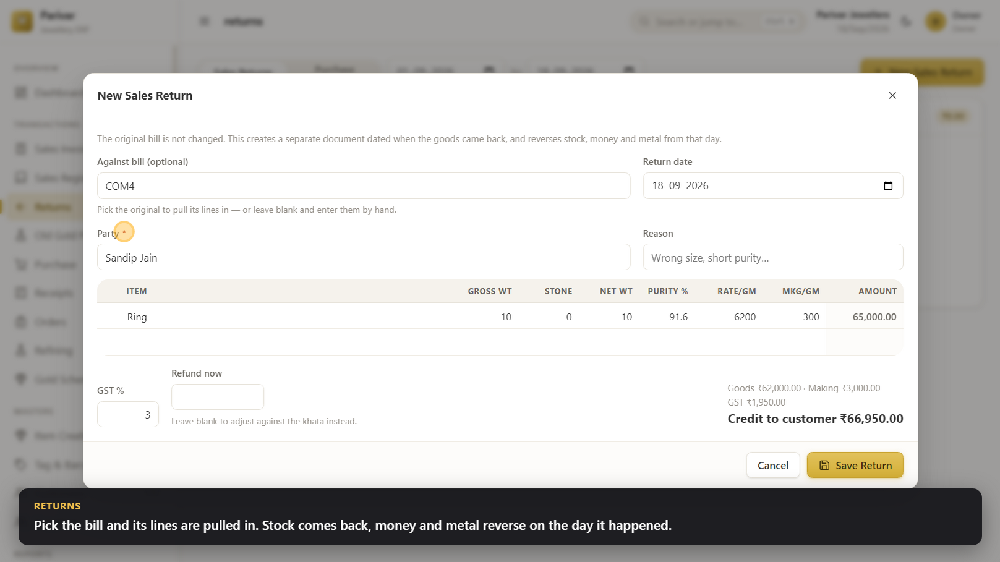
A sales return pulls the original bill's lines in.
Returns → New Sales Return. Pick the original bill; its lines are pulled in. Remove the lines that did not come back.
Enter a refund amount if you paid cash back; leave blank to credit the customer's khata instead.
Save Return. The piece is back in stock, money and metal reverse on the return date.
The original bill is never changed
A return is its own dated document. A bill that was printed and reported stays exactly as it was — that is what keeps your GST return honest.
Purchase Returns work the same way for metal sent back to a supplier.
11Old Gold Purchase — buying old gold outright
Transactions → Old Gold Purchase. A customer sells you old jewellery and buys nothing.
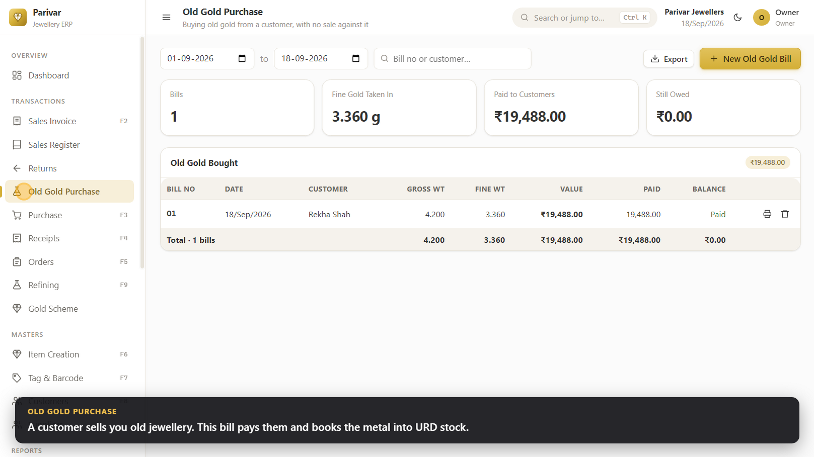
Old gold bills: fine weight, value, paid and balance.
New Old Gold Bill. Pick the customer, or leave blank for a walk-in (a walk-in must be paid in full).
One line per piece: name, description, gross, net, purity, rate per fine gram. The amount is priced on fine weight.
Deduction for melting loss or stones, if any. Paid by: cash or bank.
Paid now: leave blank to pay the whole amount. Type a smaller figure and the rest sits on the customer's khata as a credit until you pay it or they buy something.
Save or Save & Print. The bill prints on the same frame as the invoice.
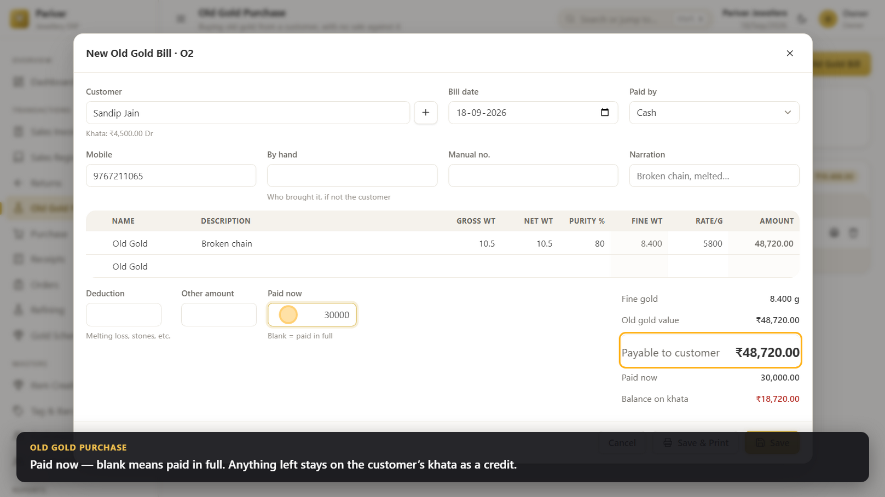
10.5 g at 80% and ₹5,800 per fine gram; ₹30,000 paid now, the rest on the khata.
What happens when you save
The metal goes into URD stock. Cash or bank drops by what you paid. The Day Book shows old gold bills on their own row; the P&L counts them as Old Gold Purchase.
12Old Gold Report
Reports → Old Gold Report. Every gram taken in, from both kinds of bill.
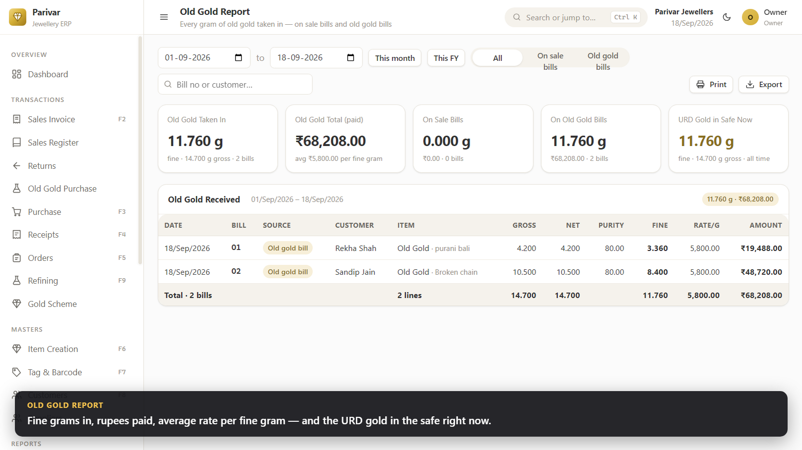
Old Gold Total: fine grams, rupees paid, average rate, and URD gold in the safe now.
Pick a date range. The tiles show fine grams taken in, the rupee total, the average rate per fine gram, the split between sale bills and old gold bills, and how much URD gold is in the safe right now.
The table lists every line with the bill it came from. Click a row to open that bill.
Filter by source, search by bill or customer, and print or export.
13Receipts, Payments and Settlements
Transactions → Receipts (F4). Money in, money out — one entry, two books.
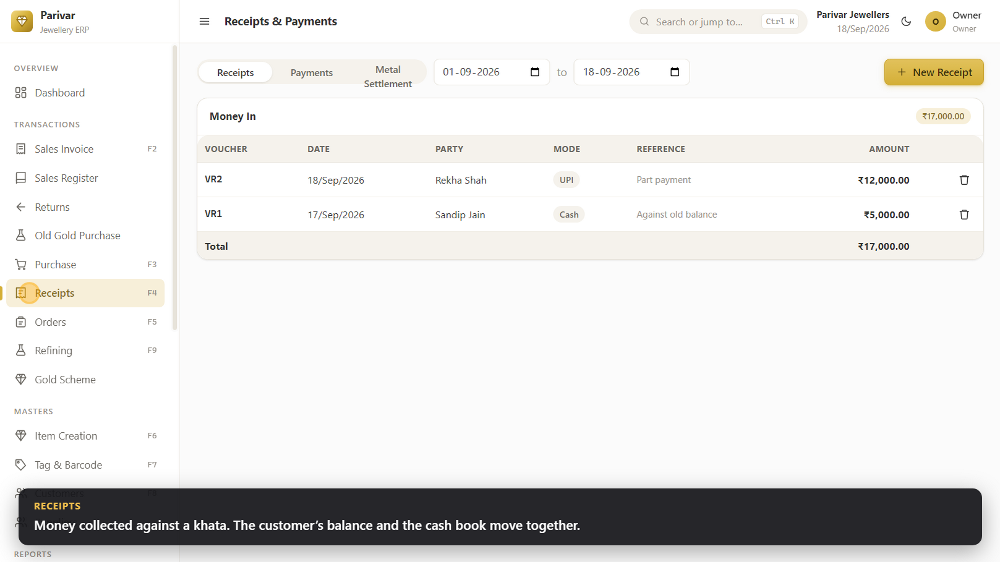
Receipts for the month; Payments and Metal Settlement on the other tabs.
Receipt — money against a khata
New Receipt. Pick the customer — how much they still owe shows at once.
Amount, date, payment mode (cash goes to the drawer; UPI, card, NEFT, cheque go to the bank), reference number, narration.
Save. Their khata comes down and the cash or bank book goes up.
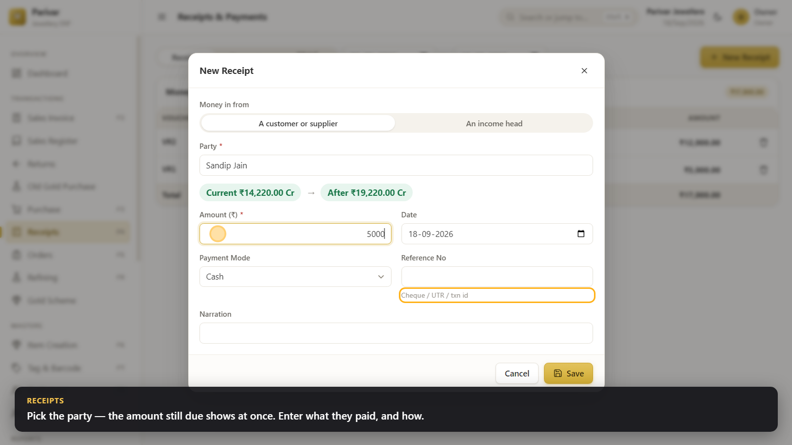
New Receipt: the party's balance is shown while you type.
Payment — money out
Pay a supplier by picking the supplier. Pay an expense — electricity, rent, tea, salary — by picking the expense head instead of a party. New heads are made under Settings → Accounts. This is the only way an expense reaches the cash book and the profit & loss.
Metal Settlement
A trade customer who owes you fine grams settles some in cash at today's rate. Enter the grams and the rate; the metal khata drops and the money comes in.
14Order Booking
Transactions → Orders (F5). What to make, by when, and the advance taken.
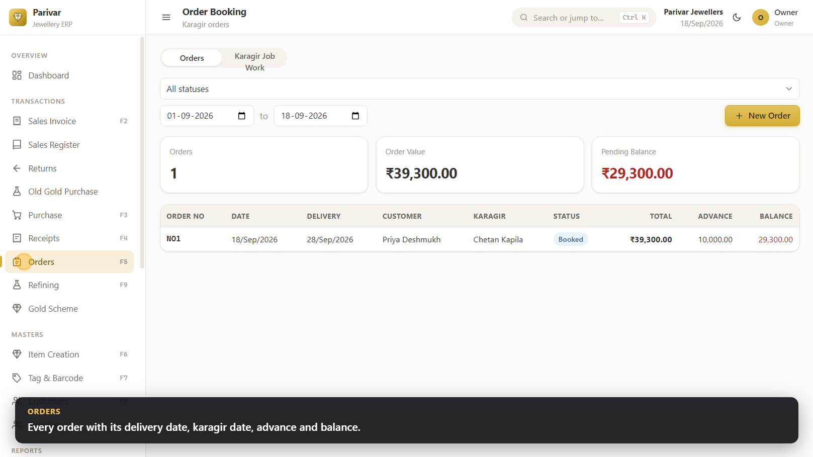
Orders with delivery date, status, advance and balance.
New Order. Customer, and the karagir who will make it (can be assigned later).
Delivery Date promised to the customer, and a separate earlier Karagir Date — the piece must be back with time to check and finish.
Lines: what to make, weight, purity, rate, making. Advance Received now. Old gold handed over at booking goes in the Old Gold at Booking table.
Save Order.
When the piece is ready, open the order and press Convert to Sales Bill. The bill is made from the order and the advance is adjusted on it automatically.
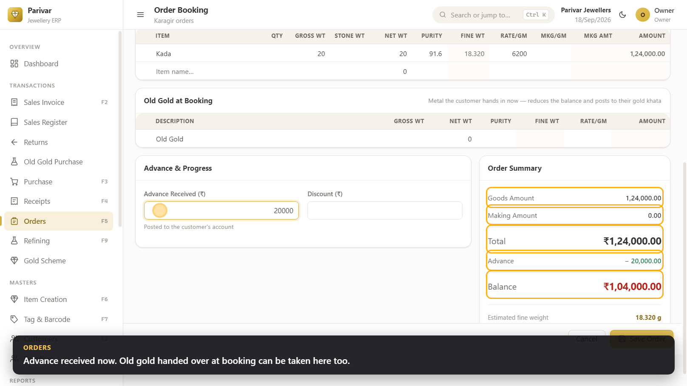
An order for a 20 g kada with ₹20,000 advance.
What happens when you save
The advance goes into cash or bank and sits against the customer until the bill is made. Old gold taken at booking goes straight into URD stock.
15Karagir Job Work
Orders → Karagir Job Work. Gold out to the goldsmith, pieces back, wastage accounted.
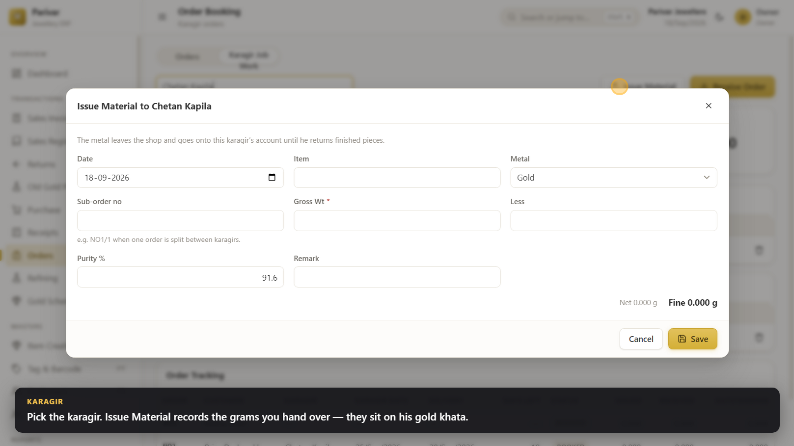
Issue Material and Receive Order for one karagir.
Pick the karagir. Issue Material: the grams you hand over and their purity. They sit on his gold khata — he is holding your gold.
Receive Order when the piece comes back: gross, stone, purity, the wastage % you allow, and his making rate per gram. TDS if you deduct it.
The ledger shows whether he is square, still holds metal of yours, or is owed labour in cash.
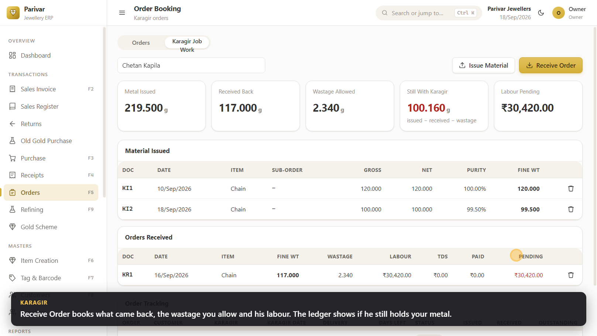
Issued, received, wastage allowed, and the metal still with him.
This is the loss-prevention control of the trade
What went out, what came back, and how much was legitimately lost as wastage. Any gap is metal to ask about.
16Refining
Transactions → Refining (F9). Scrap out, pure gold back, the loss visible.
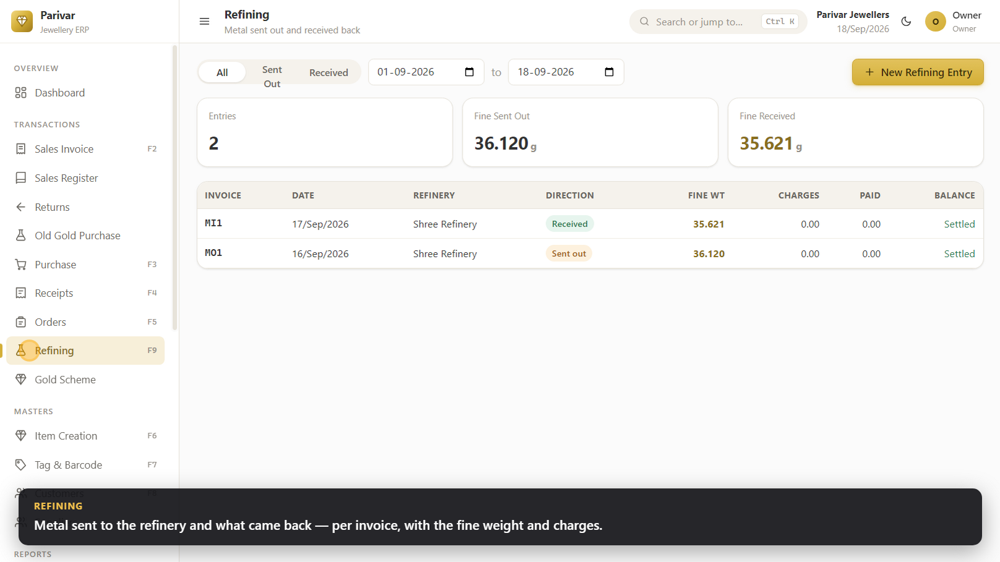
Refining entries: direction, fine weight, charges, paid.
New Refining Entry. Direction Material Out: pick the refinery and enter the scrap sent — gross, purity. Scan a tag to melt a tagged piece; it is marked melted.
When the pure gold returns, a new entry with direction Material In: weight and purity received, the refinery's charges and GST, what you paid.
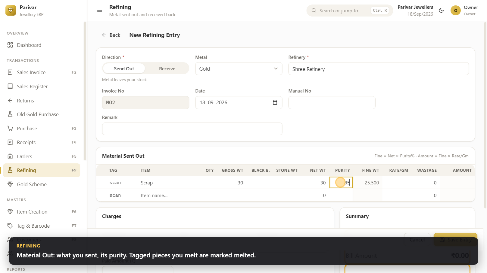
Material Out: 30 g of scrap at 85%.
Your stock drops when the metal leaves and rises when it comes back; the difference between fine out and fine in is your refining loss, in grams, on the screen.
17Gold Saving Scheme
Transactions → Gold Scheme. Monthly savings plans, tracked to the rupee and the gram.
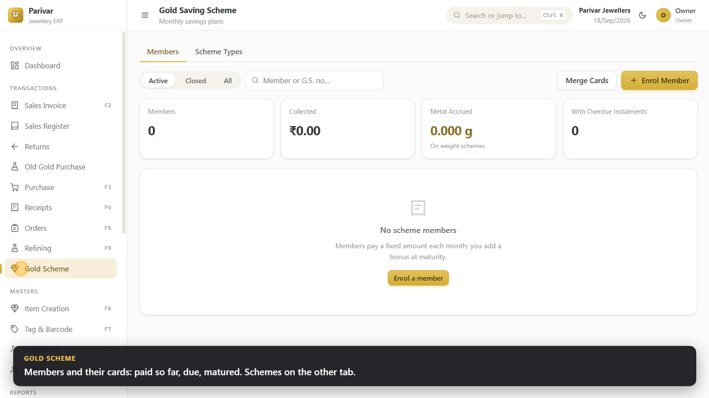
Members and their cards; Schemes on the second tab.
Design the plan once
Schemes → New Scheme: a name, the type, the period (say 12 months, 11 paid, 1 as your bonus), the monthly amount or grams, and the benefit at maturity.
Type
Member saves
At maturity
On Amount
Fixed rupees a month
Rupees paid plus a rupee bonus
On Weight
Fixed rupees a month, converted to grams at that day's rate
Grams accrued plus a gram bonus — the member is protected if gold rises
Weight Wise
Fixed grams a month
Grams plus a gram bonus
On Making
Rupees
A making-charge waiver on the bill
Enrol and collect
Enrol Member: customer, scheme, start date. The month-by-month schedule is created.
Each month open the member and press Receive on that instalment; cash or bank, and the day's rate for weight plans. Remind sends a WhatsApp for a due instalment.
At maturity the member buys: on their bill, the Saving Scheme box shows the balance and settles the bill. Anything left stays on the card or is handed back in cash.
Two cards for one person? Merge Cards.
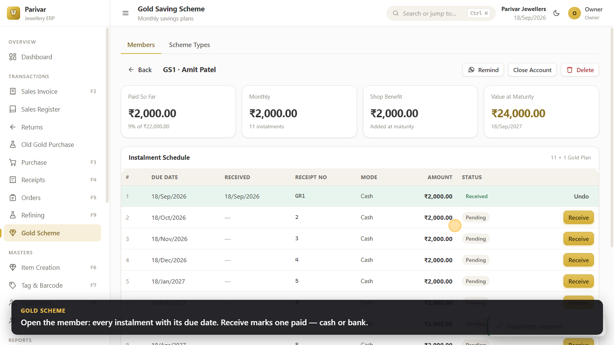
A member's card: instalments due, received, and the balance.
Scheme money is kept apart
It is a deposit you are holding, not a sale — so it lives in its own account (Gold Saving Scheme) and never muddles the customer's buying-and-selling khata. The bonus is added only once every instalment is in and the maturity date has passed.
18Stock Report and Stock Verification
Reports → Stock Report · Stock Verification.
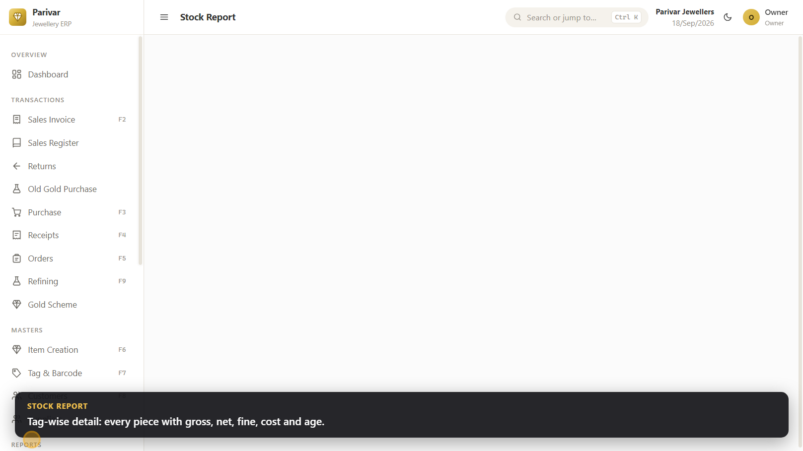
Tag-wise stock: gross, net, fine, cost and age of every piece.
Views: tag-wise detail, or summaries by item, item group, location, category, salesman, or shelf/tray.
Value at cost uses the Cost/gm on each piece — the same basis the Balance Sheet uses for closing stock.
Edit Stock: found a piece weighed wrong at stock-take? Fix it in place; the fine weight and your metal position move with it. Sold pieces cannot be edited here — fix the bill.
Grid Settings on any table: hide, rename or reorder columns. Print, or export to CSV, Excel or Word.
Stock Verification
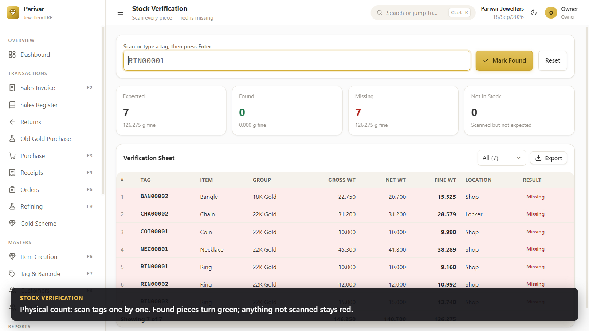
Scan each piece; what is not scanned stays red.
Physical count: scan tags one by one. Found pieces turn green; anything not scanned stays red — that is your list of what to go and look for before closing. Reset to start a fresh count.
19Day Book — closing the shop
Reports → Day Book. The one page to read before pulling the shutter.
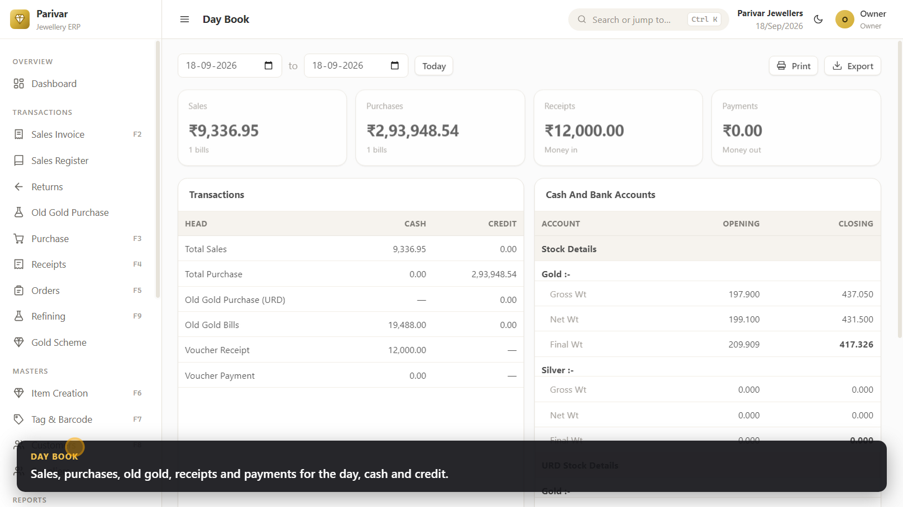
The Day Book: transactions, gold position, accounts, and takings by mode.
Transactions: sales, purchases, old gold on bills, old gold bills, receipts and payments — cash and credit.
Stock details: opening and closing in gross, net and fine, per metal, and URD (old gold) separately. A shop counting trays counts gross — that is why all three are there.
Accounts: every cash and bank account, opening, movement, closing. Count the drawer against Cash Account. It should match.
Received by mode: cash, UPI, card, NEFT — what came in today, by how it was paid.
Print it, file it, and take your backup (chapter 26).
Only cash sits in the drawer
A card swipe, UPI, NEFT or a cheque all go to the bank, not the drawer. So if the drawer does not match the Cash figure, something really is short — and that is a number worth trusting.
20Ledger / Khata and Outstanding
Reports → Ledger / Khata · Outstanding.
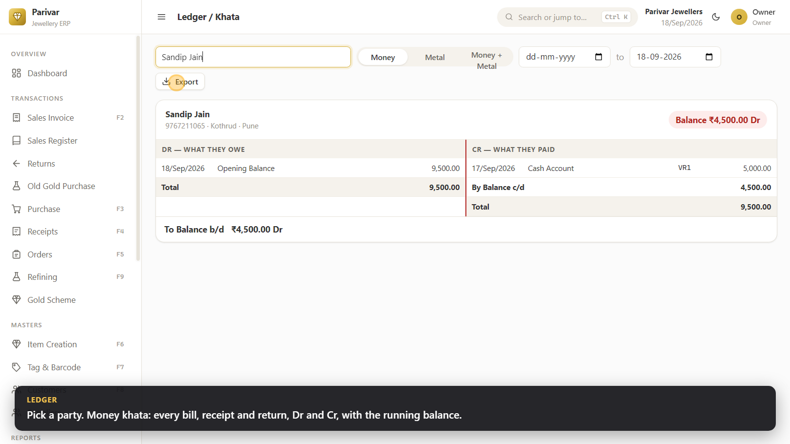
A customer's money khata: every bill and receipt, Dr and Cr, running balance.
Money: every bill, receipt, return and old gold bill for the party, with the running balance.
Metal: the same in fine grams — what they took and what they gave.
Money + Metal: one statement with both balances side by side, each with its own Dr/Cr — exactly as the paper khata, adding itself up.
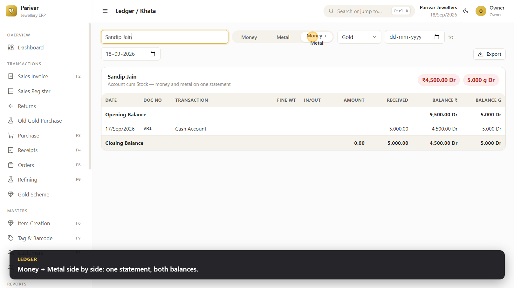
Money + Metal: rupees and fine grams on one page.
Outstanding
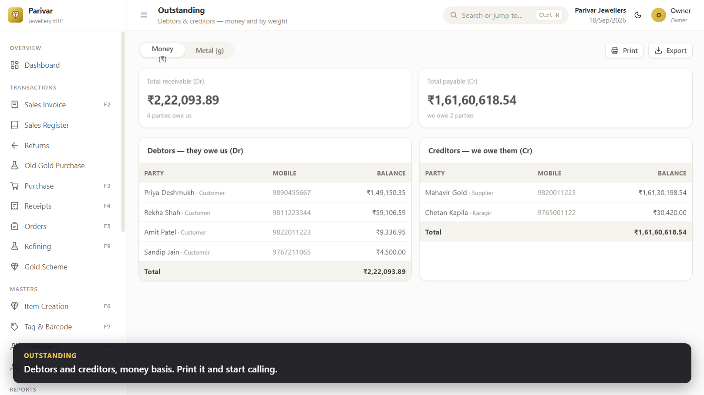
Debtors and creditors, in money — switch to metal for grams.
Who owes you and whom you owe, in rupees; switch to Metal (g) for the same in fine grams. This is the morning call-list and the payment reminder in one. Print it.
21Accounting Books, Registers and GST
Reports → Accounting Books · Cash Book & Registers · GST Reports. For you, and for your accountant.
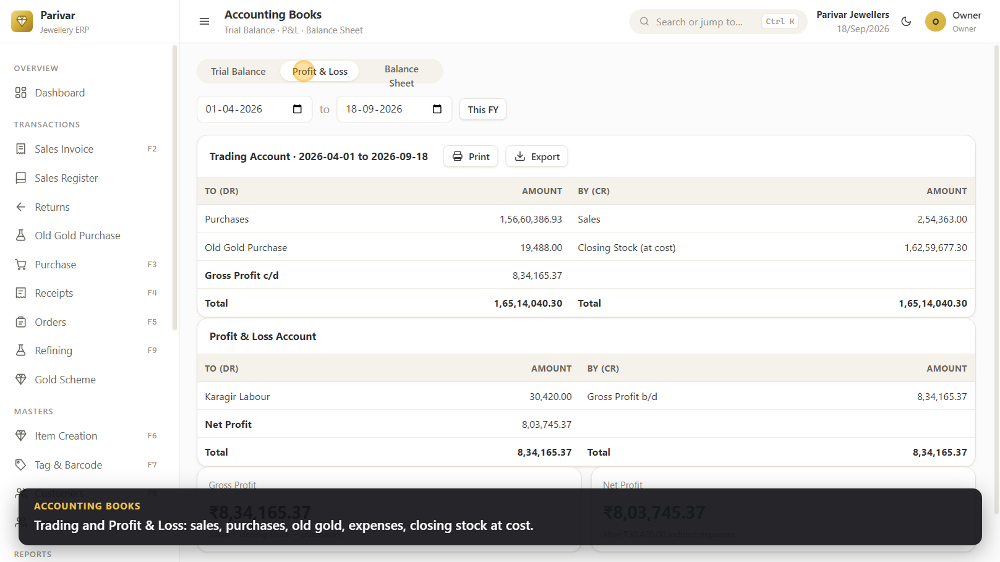
Trading and Profit & Loss for the period.
Trial Balance: every head, footing to the paisa, for any period.
Profit & Loss: sales and other charges against purchases, old gold, refining charges, karagir labour, discounts and shop expenses, with closing stock at cost.
Balance Sheet: cash, bank, debtors and stock against creditors and scheme deposits.
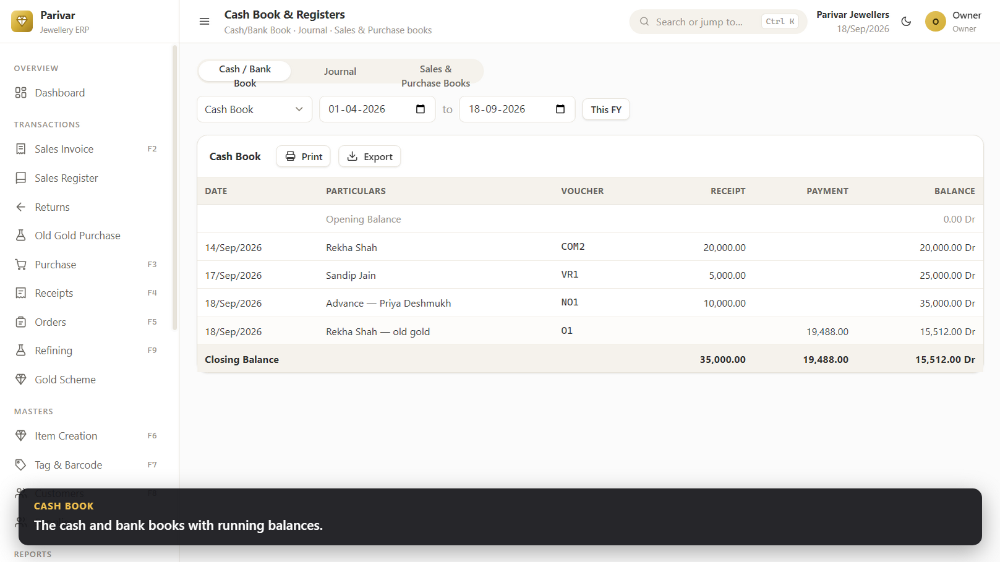
Cash book with running balance; Journal and the Sales & Purchase books on the other tabs.
GST
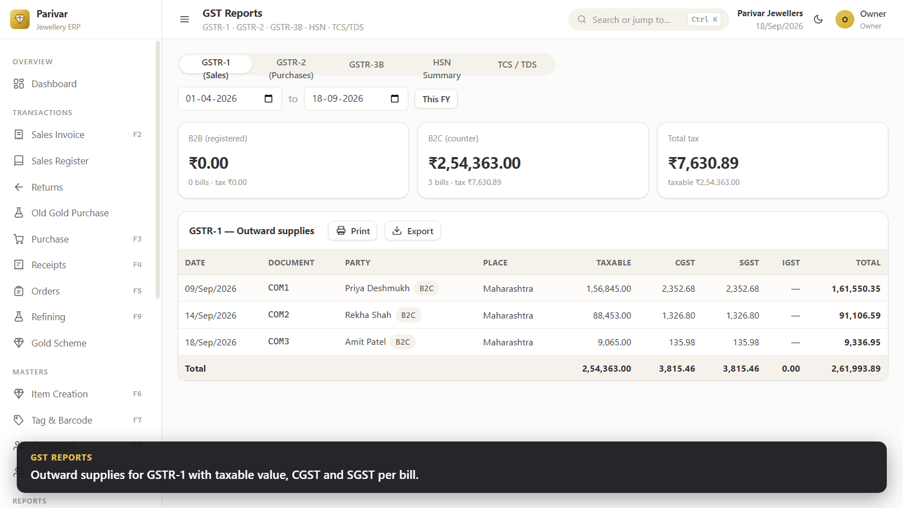
GSTR-1 outward supplies with CGST/SGST split per bill.
GSTR-1 (sales), GSTR-2 (purchases), GSTR-3B summary, HSN summary and TCS/TDS. Within the state the tax is split CGST + SGST; inter-state bills are IGST. Export any of them and hand the file to your CA.
Why the books can always be trusted
They are built from your bills, purchases and receipts every time you open them — not kept as a separate set of totals that could drift. Change a document and the books change with it.
22MIS reports — the owner's questions
Reports → MIS & Scheme Reports.
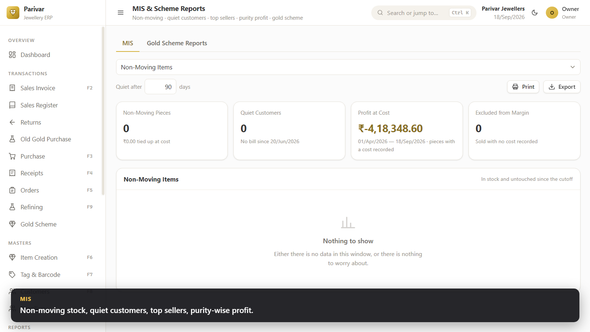
Non-moving stock, quiet customers, top sellers, purity profit.
Non-moving items: money sitting on a shelf untouched for months.
Quiet customers: regulars who have stopped coming. A call-list.
Top sellers and top areas: what and where actually sells.
Purity profit: what you sold against what it cost you, by purity.
Scheme reports: scheme master, allocated, pending, received, and sales settled by scheme.
23Branches and stock transfer
Reports → Branches & Transfer.
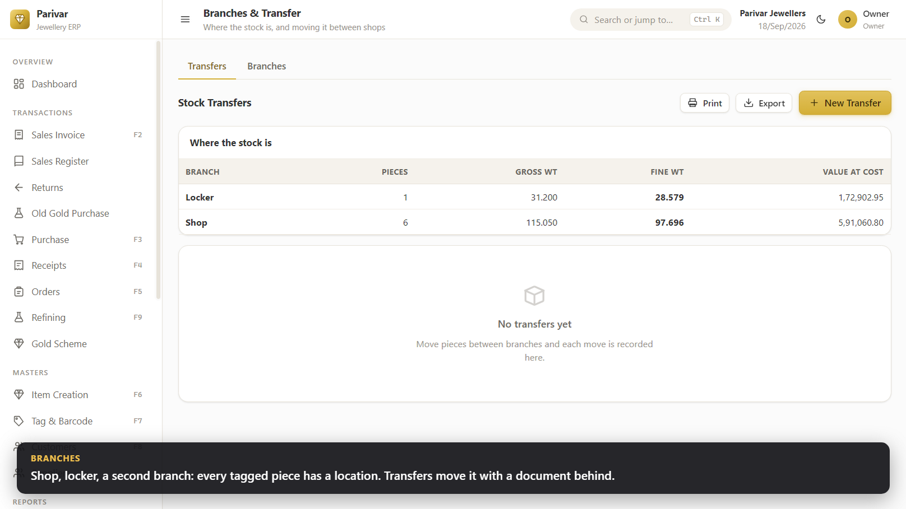
Where the stock is, and moving it between shop, locker and branches.
Every tagged piece has a location — Shop, Locker, a second branch. A transfer scans the pieces and moves them, leaving a document behind saying who moved what, when, and where. The Stock Report can be summarised by location.
24Changeover Check — before you trust it
Reports → Changeover Check. Your old book against this one.
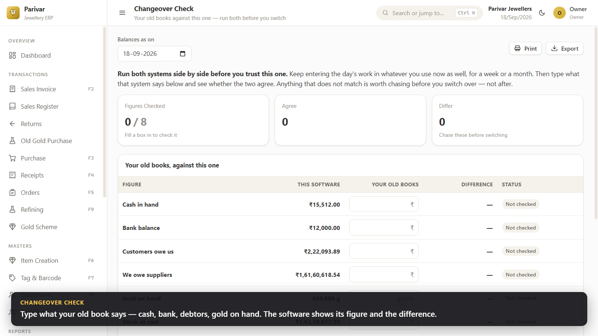
Type what your old book says; the software shows its own figure and the difference.
For one full month — a month with a busy day in it — keep writing every bill, purchase and receipt in your old book as well as here.
At month end open Changeover Check. Type what the old book says: cash, bank, who owes you, what you owe, gold on hand.
Anything marked Differs is a question to settle before you trust this book. A blank box shows as Not checked, never as agreement.
When the figures you care about say Agrees two weeks running, stop the double work.
25Settings, users, invoice design, phone view
System → Settings.
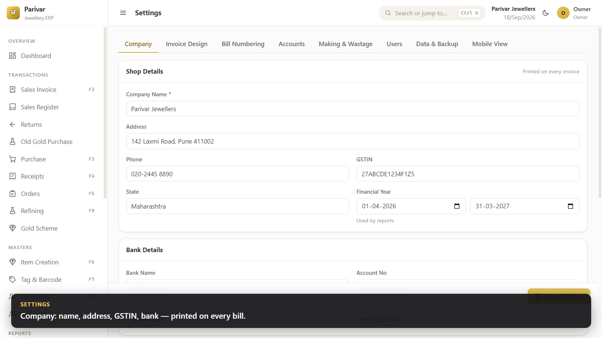
Company details print on every bill.
Tab
What it is for
Company
Shop name, address, GSTIN, state, bank details, financial year, the declaration printed on bills.
Invoice Design
Paper (A4 or 3-inch thermal), title, colour, which columns print, logo, bank details, old gold table, signature, footer note. The preview is the real bill.
Bill Numbering
Series and prefixes: COM for counter bills, ESM for estimates, MI for purchases, O for old gold bills…
Accounts
Cash, bank and expense heads; opening balances; the bank's card-swipe charges.
Making & Wastage
Default making charge and wastage % per item or item group, so nothing is retyped on every tag, bill and purchase.
Users
Staff, Manager, Owner logins. Staff can bill, take money, enter stock and run reports. Managers can also refine and remove tags. Only the Owner can delete documents, change settings or restore a backup.
Data & Backup
Backup now, restore, Google Drive backup (chapter 26).
Mobile View
Read-only access from a phone on the shop Wi-Fi.
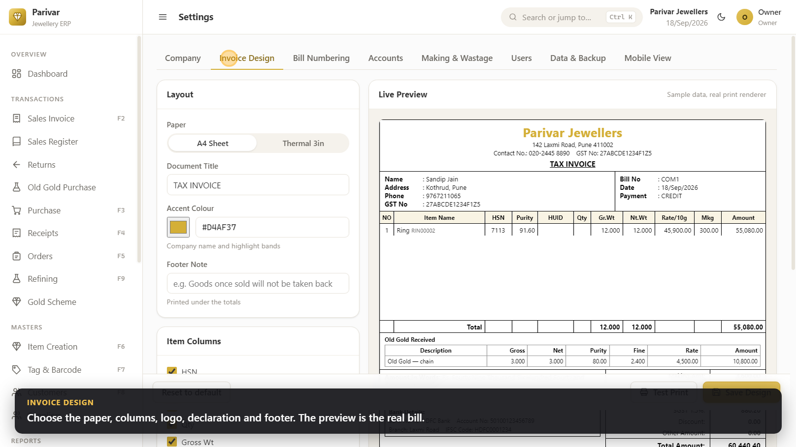
Invoice Design: the preview is exactly what prints.
Seeing the books on your phone
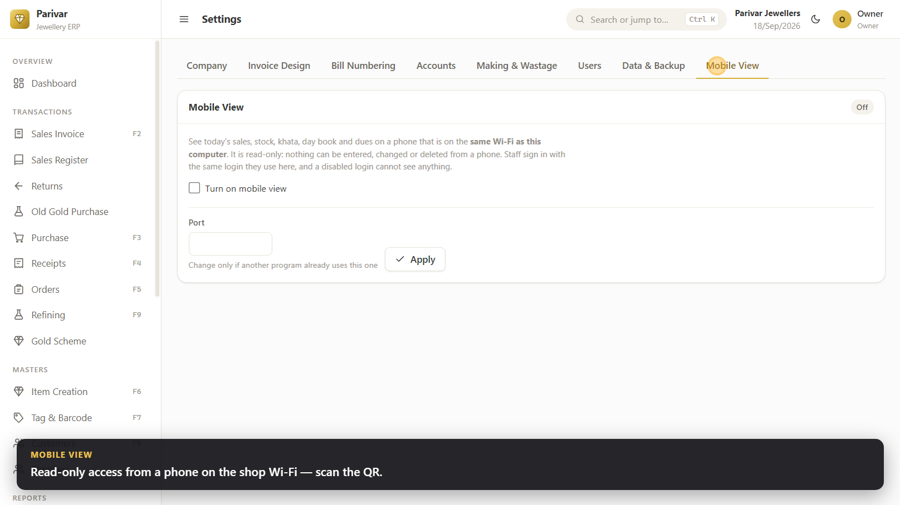
Mobile View: switch on, scan the QR code, sign in with the same login.
Switch Mobile View on, scan the QR code with a phone on the same Wi-Fi, sign in with your desktop login, and add the page to the home screen. You can see today's sales, stock, any khata, the day book and dues. Nothing can be changed from the phone, and nothing is reachable from outside the shop network.
26Backup — every single evening
The one habit that matters more than all the others.
Settings → Data & Backup → Backup Now. Save it to a pen drive you take home.
Or set up Google Drive once and the backup goes there by itself.
Do it at close, every day. It takes ten seconds.
A backup on the same PC is not a backup
If the machine is stolen or its disk dies, a copy on that machine dies with it. Pen drive or Google Drive — that is what saves you.
If the power goes, or the PC dies
A power cut cannot corrupt your books. A half-finished bill is simply not saved — the software writes a bill completely or not at all. If the machine itself dies, install the software on a new one and Restore the latest backup. Before it replaces anything, it copies the current books aside, so even restoring the wrong file is undoable.
27Printing the barcode tags
Tag & Barcode → tick pieces → Print labels.
TSC 100 × 15 mm tag (the default): the jewellery rat-tail tag on the TSC TL240. The barcode, tag number, item, purity and weights print in the head; the thin tail that wraps the piece is left blank. In the printer driver set the paper size to 100 × 15 mm and let the app's page size through.
Tag roll 50 × 12 mm, A4 sheets of 65 or 24 labels — choose in the print dialog.
Not printed filter lists only pieces whose label has never been run, so a batch is finished without labelling anything twice.
Company logo: the mark and the shop's name print on the back half. Fold the tag at its centre: barcode and details on the front, logo on the back.
Nothing needs setting: the dialog opens with Head length 30 mm, Logo panel 30 mm and Printer shift 7 mm, measured off the shop's tags and TL240, and remembers any change on that machine. Printer shift is how far right of the tag's edge the printer starts printing; if the barcode reaches the fold, raise it by a millimetre, and if the logo sits left of centre on the back, lower it. The printer cannot print in that first strip, so the front keeps a blank edge on the left.
If the bottom of an A4 bill is cut
The bill is sent to the printer as A4. If it still stops short, open the printer's own settings in Windows and set its default paper to A4 rather than Letter, and turn off any "fit to page" or "scale" option in the driver. Save PDF on the same bill always gives a full page — print that PDF once to confirm the bill itself is complete.
If the bottom of a label is cut
Check the driver's paper size is 100 × 15 with no margin. The tag layout leaves clear space above and below, so a cut label means the printer is feeding late — recalibrate the gap sensor on the TL240.
28How every number is worked out
So no figure on a bill is ever a mystery.
Weights
Net Weight = Gross − Stone − Beads − Bag
Fine Weight = Net × Purity ÷ 100
Example: 10.000 g gross, no stones, 91.6% → net 10.000 g, fine 9.160 g.
A sale bill
Goods = Net × Rate per gram (rate is typed per 10 g, stored per gram)
Making = Net × Making per gram or Goods × Making %
Bill = Goods + Making + Hallmark + Stone + Diamond
Taxable = Bill − Discounts − Loyalty
GST = Taxable × GST % (CGST + SGST within the state, IGST outside)
Total = Taxable + GST + Other + TCS + Card fee
Balance = Total − Old Gold − Received − Scheme
Example: 12.000 g at ₹4,590 with making ₹300/g and GST 3% → goods ₹55,080, making ₹3,600, bill ₹58,680, GST ₹1,760.40, total ₹60,440.40.
Old gold
Fine = Net × Purity ÷ 100
Value = Fine × Rate you allow
Example: 3.000 g at 80% allowed at ₹4,500 → 2.400 g fine → ₹10,800 off the bill.
Purchase
Fine + Wastage = Net × Purity ÷ 100 × (1 + Wastage %)
Amount = Fine + Wastage × Rate per gram
Karagir
Metal still with him = Issued fine − Received fine − Wastage allowed
Labour owed to him = Net received × Making rate − TDS
Dr and Cr
Money khata Dr = they owe you Cr = you owe them
Gold khata Dr = they owe you grams Cr = you owe them grams
29When a figure looks wrong
Before you worry — the usual, ordinary reasons.
What you see
Usually because
Stock value looks low
Pieces with no Cost/gm are left out of the value. The Stock Report says how many — fill them in.
Cash or bank is off
The account's opening balance (Settings → Accounts). Or a card/UPI receipt entered as Cash — only cash goes to the drawer.
A customer's balance is wrong
Their opening balance, or a bill entered in one book and not the other during changeover. Open their ledger and walk it down.
Gold on hand does not match the trays
Loose bullion and old gold in the safe count too — not just tagged pieces. See the Day Book's stock details and URD stock.
"This tag is not in stock"
That piece is already sold, melted or at another branch. It cannot be billed twice — the software is protecting you.
A purchase shows "… g to label" forever
The metal was sold untagged without naming the purchase, or tagged with All loose metal. Both are fine; the tally only tracks what was tied to the invoice.
Old gold bill refuses to save
A walk-in with no customer must be paid in full; a balance needs a customer's khata to sit on.
A scheme benefit has not shown
It is added only once every instalment is in and the maturity date has passed.
The label prints with the bottom cut
Printer paper size or gap calibration — chapter 27.
Whatever it is, your evening backups mean you can always step back to yesterday.
30Keyboard shortcuts and words used
Shortcuts
F2
New sales bill
F3
Purchase
F4
Receipts & Payments
F5
Orders
F6
Item Creation
F7
Tag & Barcode
F8
Customers
F9
Refining
Ctrl+K
Search pages and customers
Enter in Tag cell
Look up the scanned tag
Esc
Close a window
Words used
Fine weight
Pure gold in a piece: net × purity.
Tunch / purity
How pure, in percent. 22K = 91.6%.
URD
Old gold taken from customers (unregistered dealer).
Loose metal
Bullion, scrap and old gold not yet tagged.
Khata
A party's ledger — money and gold.
Dr / Cr
They owe you / you owe them.
Wastage
Metal lost in making, charged as a %.
Weight-wise
A bill settled in grams, not rupees.
Estimate
A quotation, not a tax invoice — no GST.
Tally
A purchase's bought weight against its labels.
Parivar Jewellery ERP · Shop Owner's Manual · Version 1.26. Keep the daily backup, count the drawer each night, and reconcile against your old book for the first month. Do those three things and the rest looks after itself.